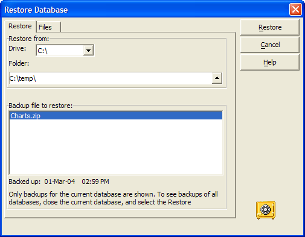
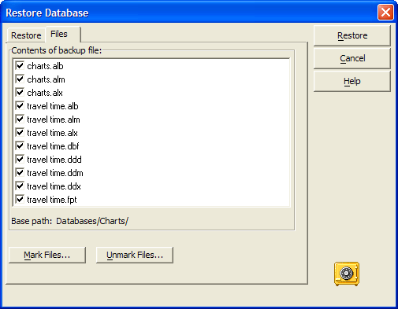
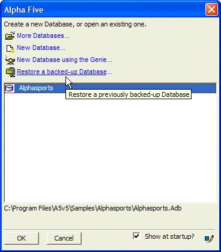

Restore a Database Backup
In Alpha Anywhere Version 6 the Restore Database utility requires system dates in MM/DD/YY formats. In Alpha Anywhere Version 7 the Restore Database utility also supports with DD/MM/YY formats.
To restore a database:
Select Tools > Backup/Restore Database > Restore Database.

Optionally, select a backup file from the list and click Restore.
Optionally, click Files and select the specific database backup to restore, or select to back up and restore individual files.

Alternatively, you can use the Alpha Anywhere Welcome screen to select a database to restore.

See Also
Backup Database, RESTORE_DATABASE()